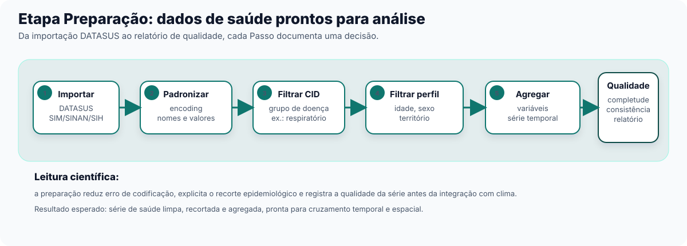
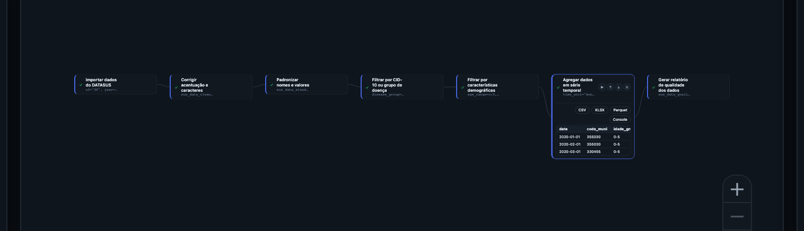

4 Etapa Preparação: dados de saúde prontos antes de tudo
A partir deste capítulo o guia assume que você quer fazer, não só entender. Se seu interesse é só acompanhar o panorama sem montar nada, pode ler a introdução de cada seção e pular direto para o resumo “Verifique se ficou” no final — a lógica geral continua acessível sem executar um único Passo. Mas se você é gestor técnico ou acadêmico com um Pipeline para montar, este capítulo mostra como começar a sequência de trabalho.
4.1 Por que a Preparação vem primeiro
Dados de saúde brutos do DATASUS quase nunca chegam prontos para análise. Um arquivo recém-importado do SIM, do SINAN ou do SIH costuma trazer nomes de município com acentuação corrompida, colunas com nomes técnicos que mudam de ano para ano, e milhões de registros de causas e faixas etárias que não têm nada a ver com a pergunta que você quer responder. Antes de cruzar esses dados com clima ou território — o assunto do Capítulo 3 — é preciso deixá-los limpos, padronizados e recortados para o que importa.
É esse o papel da Etapa Preparação: é sempre a primeira grande Etapa de qualquer Pipeline no climasus+ Studio. Sem dados de saúde limpos e padronizados, nenhuma Etapa seguinte funciona direito — um Cruzar dados de saúde e clima (sus_climate_aggregate) (Capítulo 3) que recebe uma série de saúde com encoding quebrado ou datas fora de padrão não consegue cruzar saúde com clima corretamente.
Um gestor público não precisa montar o Pipeline pessoalmente, mas precisa saber que essa etapa existe — porque é aqui que decisões como “que grupo de doença estamos olhando” e “que recorte de idade” ficam explícitas e documentadas, em vez de escondidas numa planilha que só uma pessoa sabe explicar.
4.2 As 15 Funções da Preparação, em 4 grupos
A Etapa Preparação reúne 15 Funções na Biblioteca. Elas se agrupam em quatro famílias lógicas, cada uma respondendo a uma pergunta diferente:
(a) Importar e ler — como os dados entram no Pipeline.
- Importar dados do DATASUS (
sus_data_import) — baixa e lê dados direto dos sistemas do DATASUS (SIM, SINAN, SIH, SIA, CNES, SINASC), com cache local para não repetir downloads. - Ler dados exportados (
sus_data_read) — lê de volta arquivos já processados e exportados anteriormente (produzidos por Exportar dados processados (sus_data_export)), com suporte a leitura em lote e paralela.
(b) Limpar e padronizar — corrigir o que vem torto antes de qualquer recorte.
- Corrigir acentuação e caracteres (
sus_data_clean_encoding) — varre colunas de texto e corrige problemas de codificação de caracteres (por exemplo, “São Paulo” que chega como “Sao Paulo” ou com símbolos incorretos). - Padronizar nomes e valores (
sus_data_standardize) — padroniza nomes de coluna e valores categóricos, para garantir consistência entre diferentes anos e versões dos sistemas de origem. - Verificar qualidade da série temporal (
sus_data_ts_quality) — avalia a qualidade de séries diárias de eventos de saúde por município e sinaliza completude e problemas estruturais.
(c) Filtrar — recortar só o que interessa para a pergunta em mãos.
- Filtrar por CID-10 ou grupo de doença (
sus_data_filter_cid) — filtra por código da CID-10 ou por grupos de doença predefinidos (respiratório, cardiovascular, dengue etc.), com suporte multilíngue. - Filtrar por características demográficas (
sus_data_filter_demographics) — filtra por características demográficas: sexo, raça, faixa etária, escolaridade, região, município. - Explorar grupos de doenças (CID-10) (
sus_data_cid_select) — abre uma interface interativa para explorar grupos de doença e fatores climáticos associados, de apoio ao uso de Filtrar por CID-10 ou grupo de doença (sus_data_filter_cid).
(d) Transformar, agregar, exportar e visualizar — preparar a forma final dos dados.
- Criar variáveis derivadas (
sus_data_create_variables) — cria variáveis derivadas comuns em análise epidemiológica (faixas etárias, variáveis de calendário) a partir dos dados de saúde. - Agregar dados em série temporal (
sus_data_aggregate) — agrega dados individuais em contagens de série temporal, por unidade de tempo e variáveis de agrupamento — essencial para modelagem posterior. A partir deste Passo, a análise deixa de descrever o paciente individual e passa a descrever o comportamento de uma população — quantos casos por município, por semana ou por mês — que é o nível em que a Etapa Integração (Capítulo 3) e a modelagem seguinte trabalham. - Exportar dados processados (
sus_data_export) — exporta os dados processados com documentação de metadados, para reprodutibilidade. - Visualizações prontas a partir dos dados já agregados: Gerar gráfico de série temporal (
sus_data_plot_aggregate_ts), Mapear dados agregados por município (sus_data_plot_aggregate_map) e Visualizar perfil demográfico (sus_data_plot_demographics). - Gerar relatório de qualidade dos dados (
sus_data_quality_report) — lê o histórico de Passos aplicados e produz um relatório seccionado de qualidade dos dados.
São dois eixos de recorte independentes: um define o quê você está contando (que doença, que causa), o outro define quem está sendo contado (que idade, que sexo, que território). Separar os dois em Passos distintos permite recombinar cada eixo sem recriar o Pipeline do zero — trocar o recorte de idade não exige refazer o filtro de doença, e vice-versa.
4.3 Exercício guiado: da importação ao relatório de qualidade
Vamos retomar o recorte de respiratório pediátrico apresentado no Capítulo 0: óbitos por causas respiratórias em crianças, um dos temas mais sensíveis a queimadas e má qualidade do ar. O Modelo de catálogo pipeline-preparacao-basica já traz o esqueleto dessa sequência — você pode carregá-lo no Centro de Pipelines para conferir, embora aqui a gente monte a versão completa, com o recorte demográfico e o relatório de qualidade que o Modelo básico não inclui.


Neste exercício, os Parâmetros que mudam a pergunta analítica são poucos: system, uf e year definem a fonte, o território e o período; disease_group define o desfecho de saúde; age_range define a população; e time_unit define a escala temporal da série. Os demais Parâmetros podem ficar no padrão enquanto você estiver aprendendo o fluxo.
4.3.1 Passo a passo
Importar — Função Importar dados do DATASUS (
sus_data_import). Parâmetro-chave:system = "SIM-DO"(óbitos) eufcom os estados de interesse (ex."SP"). O Resultado é uma tabela bruta de óbitos, ainda sem qualquer recorte.Padronizar / corrigir encoding — Funções Corrigir acentuação e caracteres (
sus_data_clean_encoding) e depois Padronizar nomes e valores (sus_data_standardize). Não há parâmetro que o leitor precise decidir aqui — é correção automática — mas o Resultado muda de “tabela suja” para “tabela com nomes de coluna e valores categóricos consistentes”, condição para qualquer filtro funcionar corretamente.Filtrar por CID — Função Filtrar por CID-10 ou grupo de doença (
sus_data_filter_cid). Parâmetro-chave:disease_group = "respiratory"(grupo de causas respiratórias, códigos que começam com a letra J na CID-10). O Resultado passa de “todos os óbitos” para “só os óbitos respiratórios”.Filtrar por demografia — Função Filtrar por características demográficas (
sus_data_filter_demographics). Parâmetro-chave:age_range = c(0, 5), isolando o recorte pediátrico. O Resultado agora é “óbitos respiratórios em menores de 5 anos” — o mesmo recorte usado no arco ec-01 do catálogo.Criar variáveis e agregar — Função Criar variáveis derivadas (
sus_data_create_variables) (parâmetrocreate_age_groups = TRUE, comage_breaksdefinindo os cortes de faixa etária) e, em seguida, Agregar dados em série temporal (sus_data_aggregate) comtime_unit = "month". O Resultado deixa de ser uma lista de registros individuais e passa a ser uma série temporal mensal — a forma que a Etapa Integração (Capítulo 3) espera receber.Relatório de qualidade — Função Gerar relatório de qualidade dos dados (
sus_data_quality_report). Não recorta nem transforma nada; produz um Resultado de texto em seções, com base no histórico de Passos já aplicados no Pipeline.
Ao final, o Pipeline tem 6 Passos encadeados, cada um como um Nó no grafo, na ordem acima — trocar a ordem entre filtro e agregação, por exemplo, mudaria o resultado: agregar antes de filtrar contaria óbitos que você não quer incluir.
4.4 Como ler o relatório de qualidade
Gerar relatório de qualidade dos dados (sus_data_quality_report) não é um veredito de aprovação ou reprovação — é um diagnóstico. Ele lê o que já foi feito nos Passos anteriores e organiza, em seções, o que vale conferir: completude dos dados (faltam meses? faltam municípios?), consistência da distribuição demográfica com o esperado, e sinais de problema estrutural na série temporal.
Se a seção de completude apontar meses com poucos registros, isso não impede você de seguir para a Integração — é uma informação para decidir com conhecimento de causa. Talvez o recorte de doença escolhido seja raro naquele território (esperado), talvez haja um problema real de sub-registro (vale investigar antes de seguir). O relatório não decide por você; ele só evita que você siga sem saber.
Para o gestor público, essa seção costuma ser a mais operacional do capítulo: é o ponto em que o Studio mostra, em linguagem direta, se a base de dados escolhida sustenta a pergunta em análise — antes de qualquer número aparecer num relatório para tomada de decisão.
Com uma série de saúde limpa, recortada, agregada e com seu relatório de qualidade em mãos, o Pipeline está pronto para a próxima Etapa: cruzar essa série com dados climáticos e de território. É esse o assunto do Capítulo 3.
1. Por que filtrar por CID e filtrar por demografia são dois Passos separados, e não um só?
São dois eixos de recorte independentes: CID define o quê está sendo contado (a doença), demografia define quem está sendo contado (idade, sexo, território). Separar os dois permite recombinar cada recorte sem refazer o outro.
2. O relatório de qualidade aponta um problema no recorte que você escolheu. Isso significa que o Pipeline não pode continuar?
Não. Gerar relatório de qualidade dos dados (sus_data_quality_report) é diagnóstico, não bloqueio — ele mostra o que vale conferir, mas quem decide se segue, ajusta o recorte ou investiga a causa é quem está montando o Pipeline.
3. Qual Etapa vem depois da Preparação, e por que os dados precisam estar “prontos” antes dela?
Vem a Etapa Integração (Capítulo 3), que cruza a série de saúde já preparada com dados climáticos e socioeconômicos. Se a série de saúde ainda tiver encoding quebrado, datas fora de padrão ou registros que não deveriam estar no recorte, o cruzamento com clima sai errado — a Integração confia que a Preparação já entregou uma série confiável.